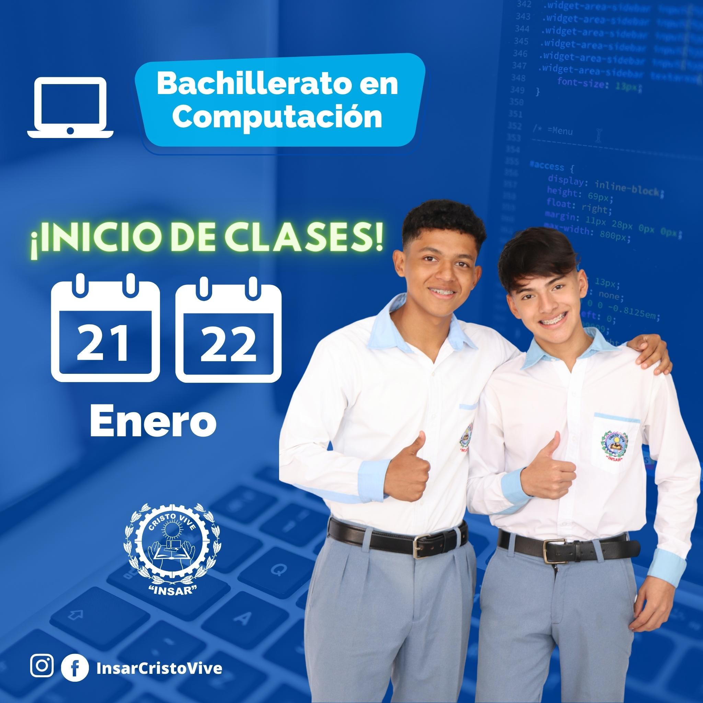

Ubicacion
3 Avenida a
Zona 1, Barberena, 06002
(+502) 7822 7801
info@insarycristovive.edu.gt
horarios
Lunes a Viernes
7:00 AM A 4:00 PM
Sabado a Domingo
1:00 PM A 5:00 PM
Esta carrera es muy novedosa, apta para jóvenes y señoritas que se consideran tener inclinación por las áreas: contable, administrativa y fiscal; y ser hablantes del idioma inglés. Cuenta con tres años de preparación académica para graduarse de Perito Contador Bilingüe.
Los(as) estudiantes desarrollan el potencial intelectual por medio del alcance de todas las competencias y conocimientos que les permite estar capacitados(as) en el manejo de varias clases de contabilidad, desempeño administrativo, así como el área fiscal, que les proporciona el conocimiento teórico práctico en el ámbito legal, obteniendo dominio en el análisis, interpretación y aplicación de leyes.
Desarrolla además la facilidad comunicativa en el uso del idioma inglés. Adquiere conocimientos tecnológicos al utilizar diversidad de programas específicos, que le serán de mucha utilidad al emprender su propia empresa con visión moderna, apta para la sociedad actual.
Ver PensumEsta carrera surge como una opción valiosa y novedosa para que los estudiantes desarrollen las competencias, habilidades y destrezas, a través del conocimiento de modernas herramientas y plataformas virtuales, en computación, ofimática y producción de contenidos digitales, con el fin de saber enfrentar los desafíos, exigencias y tendencias de la globalización.
La formación que reciben las y los futuros Bachilleres en Ciencias y Letras con Orientación en Computación, les prepara de forma sistemática para dotarlos de un perfil profesional, que desarrolla el conocimiento intelectual integral en los ámbitos humanista, científico y tecnológico, que les permitirá hacerle frente a los retos en la sociedad actual, poniendo de manifiesto toda una gama de principios y valores para la eficaz práctica de relaciones interpersonales, necesarias para el ejercicio profesional, abriendo la oportunidad para continuar estudios universitarios en Ingeniería de Sistemas, Marketing digital, Diseñador web, Creación de APP, entre otras.
Ver PensumEsta carrera comprende dos años de estudio. A las futuras Secretarias y Oficinistas se les prepara a través de un plan de estudios acorde a las exigencias administrativas para una eficiente gestión, organización y desempeño en la oficina. Adquieren destrezas en redacción de correspondencia comercial u oficial, archivo de documentos, organización del ambiente laboral, atención al cliente, desenvolvimiento personal, facilidad comunicativa. Se caracterizan por sus valores éticos y morales al ser discretas, amables, cordiales, eficientes, creativas, con iniciativa, adaptabilidad y puntualidad.
Ver PensumLa carrera de Secretariado Bilingüe (español-inglés) es exclusivamente para señoritas que tienen la vocación de servicio secretarial para desempeñarse en el ámbito de la oficina, como asistentes ejecutivas del Gerente de la empresa. Nuestro plan de estudios comprende tres años para que las estudiantes culminen su preparación académica, obteniendo el título de Secretaria Bilingüe (español-inglés).
Adquieren las destrezas lingüísticas para hablar, leer y traducir del español al inglés o viceversa. Se les forma con principios, valores, liderazgo, haciendo énfasis en el código ético de la profesión, para que su desempeño en el campo administrativo sea con una visión clara, iniciativa y creatividad.
Al finalizar los estudios, egresa como una profesional eficiente, hábil en tecnología y organización de archivos; dominio mecanográfico - taquigráfico, redacción de documentos comerciales y oficiales, discreción para guardar información empresarial o institucional. El perfil profesional se caracteriza por su capacidad de adaptación al ambiente laboral, limpieza y orden, iniciativa, capacidad de gestión, responsabilidad, excelentes relaciones humanas, puntualidad y espíritu de servicio.
Ver Pensum
3 Avenida a
Zona 1, Barberena, 06002
(+502) 7822 7801
info@insarycristovive.edu.gt
Lunes a Viernes
7:00 AM A 4:00 PM
Sabado a Domingo
1:00 PM A 5:00 PM